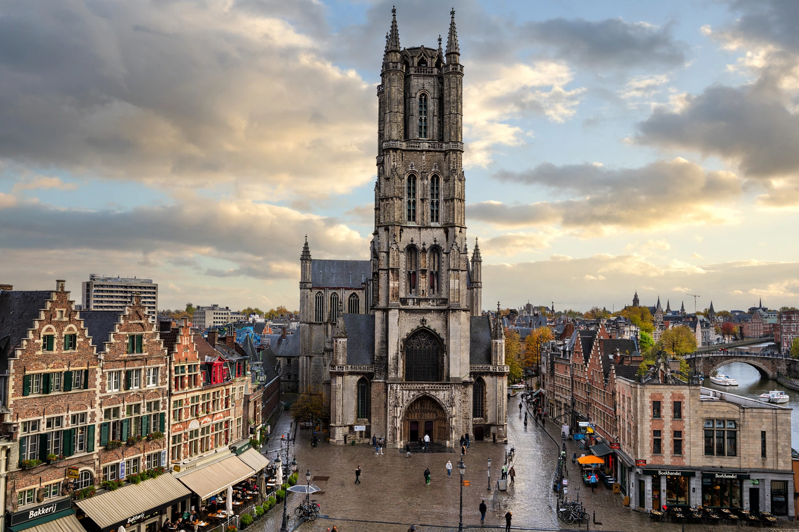

| Location | Ghent, East Flanders, Belgium |
|---|---|
| Denomination | Roman Catholic |
| Diocese | Ghent |
| Dedication | Saint Bavo of Ghent |
| Architecture | Gothic (Brabantine) |
| Notable artwork | The Ghent Altarpiece (1432) |
Saint Bavo's Cathedral (Dutch: Sint Baafskathedraal) is a Roman Catholic cathedral in Ghent, Belgium. The 89-metre-tall Gothic building is the seat of the Diocese of Ghent and is named for Saint Bavo of Ghent. It contains the famous Ghent Altarpiece by Hubert and Jan van Eyck.
The cathedral stands on the site of the first chapel of Saint John the Baptist, founded in 942. A Romanesque church followed in the 11th century, and construction of the present Gothic choir began in the 13th century; the nave and the great west tower were added over the following two centuries. Emperor Charles V, born in Ghent, was baptised in the church in 1500. The church became a cathedral in 1559 with the creation of the Diocese of Ghent.
The cathedral's treasure is the Adoration of the Mystic Lamb, commonly called the Ghent Altarpiece, completed by Jan van Eyck (with his brother Hubert) in 1432. One of the most influential paintings of the Northern Renaissance, it has survived fires, iconoclasm, wartime looting by Napoleon and the Nazis, and the still-unsolved 1934 theft of its "Just Judges" panel.
Other works in the cathedral include Peter Paul Rubens's The Conversion of St Bavo (1624), an elaborate Baroque pulpit in marble and oak by Laurent Delvaux, and the mausoleum chapels of Ghent's bishops. The crypt preserves remains of the Romanesque church and an extensive collection of religious metalwork and textiles.